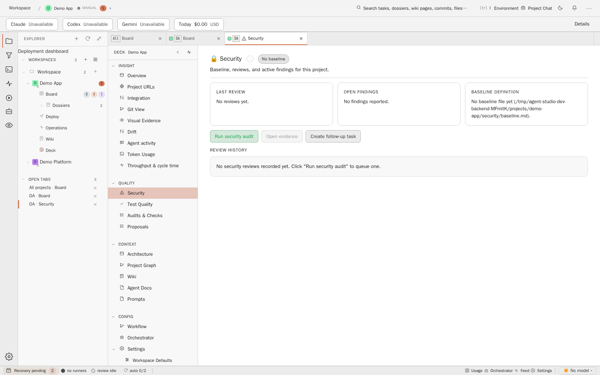
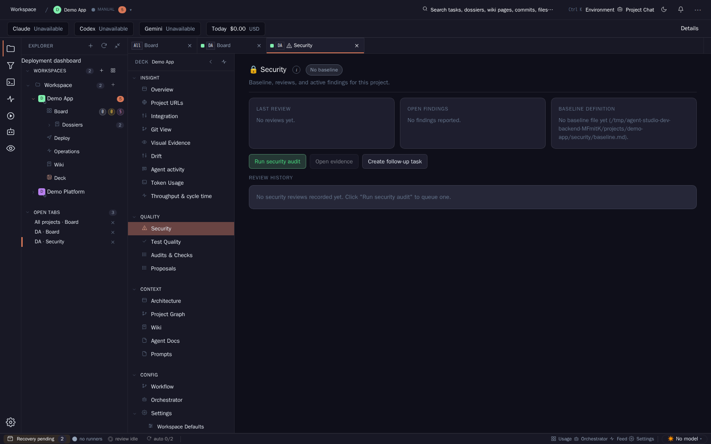
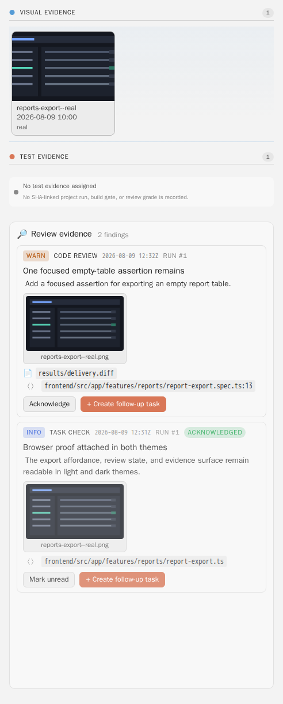
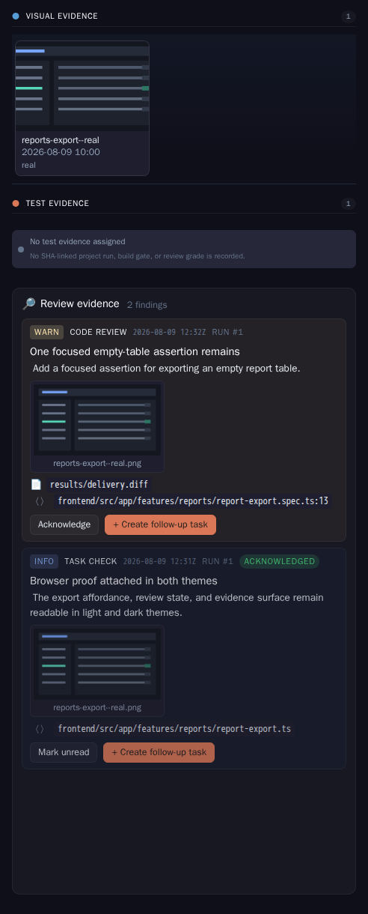
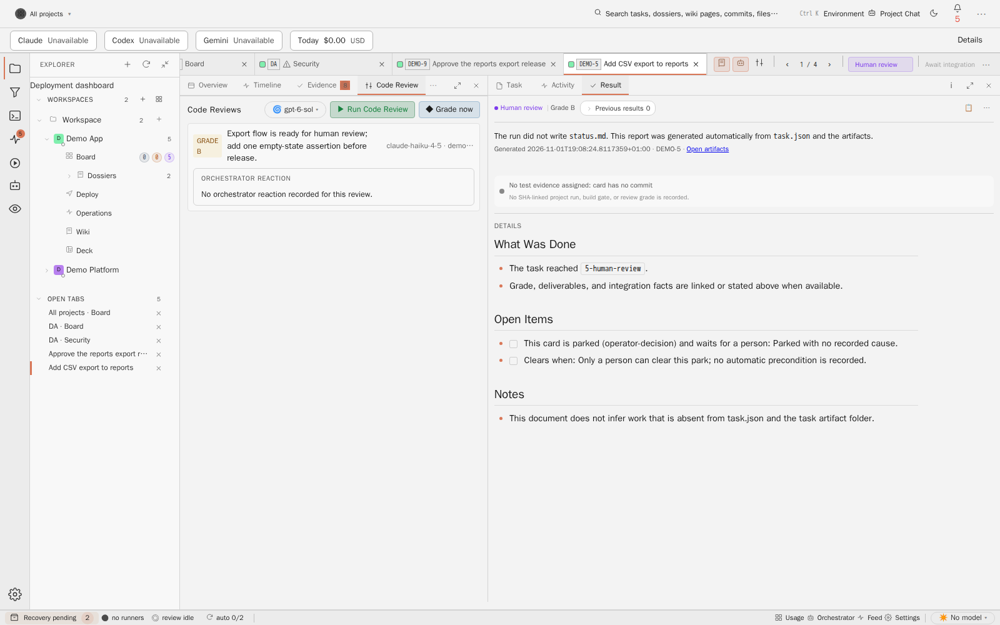
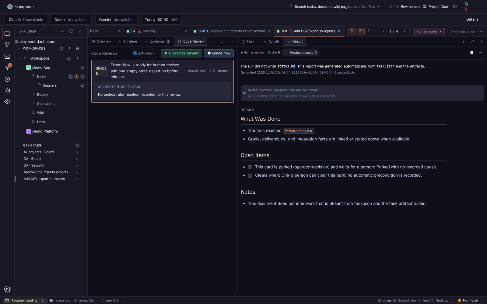

Quality becomes an area of the one application: a project jump in the Deck, a Quality panel on every card that shows the verdict for exactly the card's commit range, and one sign-in. Quality Studio keeps working on its own. The two products meet through a versioned HTTP contract and never share a data store.
Pattern conceptStatus decision-pendingPhase decision-readySource AGT-3352Builds on QS-W6 (decided), QS-W31 (pending)Agent Studio snapshota3b98b11bQuality Studio snapshot7dd46b54 (27 Oct 2026)
00 Decision summary
Recommended direction
Run Quality Studio as an opt-in service in Studio's server stack, under its own sibling hostname (for example quality-robert.omgai.dev), not under a path of the Studio origin. The signed-in user moves across with a signed hand-off: Studio mints a 60-second, single-use assertion for Quality Studio and delivers it in a POST body, never in a URL, and Quality Studio opens its own session. The card shows one verdict: Agent Studio's review outcome, in which Quality Studio produces the code-quality aspect (QS-W31 option B). That verdict is computed once on the Review Plane for the range merge-base..Result-SHA and stored on both sides. Opening Quality Studio never runs a review again.
Question
Recommended answer
Decision
Jump per project
A "Quality Studio" row in the Deck's Quality group opens a status panel with "Open in Quality Studio" (new tab). The Explorer project tree also gets a one-click row. The target is the repository dashboard, /?repo=<id>.
Studio stores the Quality Studio repository id per project, registers automatically on project creation, and reconciles later. The id is the lowercase project id, for example proj-002. Exact-path matching is retired.
Every statement in the card was checked against both repositories. Most of it holds. Five details change the design.
Card statement
What the code says
Quality Studio has local mode (loopback, no tokens) and hosted mode (one container, token on every request).
Correct. Local mode binds 127.0.0.1:5127 and refuses non-loopback addresses (LocalModeBindingGuard.cs:41-56). Hosted mode accepts only Authorization: Bearer, compares SHA-256 hashes of configured client credentials (ApiSecurity.cs:116-128), and has no users, cookies or OIDC. The browser keeps the token in localStorage as qs-api-token (api-access.ts:3). New: hosted mode also requires X-Client-Id on every mutation (Program.cs:209-217), and the Quality Studio frontend never sends that header, so browser edits in hosted mode are refused. This was read in the code, not exercised at runtime.
POST /api/repos/{id}/change-review returns a verdict for a base..head range, and no gate consumes it.
Correct (Program.cs:368-369, change-reviews.md:26). New: it is synchronous, makes one model call (retained responses took 5.4 to 18.1 s, median about 11 s), stores nothing, has no GET, and has no UI page. It requires full 40-character SHAs and computes a two-dot git diff base head (ChangeReviewVerdictService.cs:79), so the caller must pass the merge-base, not the integration tip.
Quality Studio has sensors, an attack coverage matrix, a boundary inventory and a finding lifecycle.
Correct, with two limits: the attack coverage matrix is a dialog, not a route, and the boundary inventory has no page. The frontend has no router; position lives in query parameters repo, path, kind, finding, location, theme (shell/app.ts:74-76). Nothing addresses a commit range yet.
Agent Studio calls the sensor API and shows review evidence in the card's protocol pane.
Partly. QualityAnalysisStepRunner calls only the eslint sensor over HTTP. It finds the repository by an exact rootPath match (QualityAnalysisStepRunner.cs:210-218), runs only in the local monolith review, and is report-only. The findings render as "Code review" rows in the panel under the card's Evidence tab (prompt-pane.component.html:148); the component folder sits under protocol-pane. The keys QualityStudio:BaseUrl, ApiToken and ClientId appear in no deploy file, and no settings UI exists.
Studio moves to a public server; a loopback link would break.
Correct. D15 option B moves Studio to agent-runner-01 as robert.omgai.dev behind Cloudflare (move-studio-to-server.md:3). Three facts constrain the design. The shell CSP is connect-src 'self'; frame-src 'self' (Caddyfile.frontend:35). The session cookie is __Host-agentstudio-session, host-only, SameSite=Strict (AccessSecurityEndpoints.cs:367-374). And Studio has no OIDC and no forward-auth endpoint.
Two earlier Quality Studio decisions already frame the review side. QS-W6 (decided 11 August 2026, docs/operations/studio-integration/ in Quality Studio) gives Quality Studio the code-quality semantics and the finding envelope. Agent Studio keeps subject fencing, the delivery grade, council, gates and lanes. Quality Studio stays the engineer room, and Studio links to it. QS-W31 (decision pending, docs/qs-review-decider/) recommends that Quality Studio decide the code-quality aspect only, after a paired trial. This Dossier does not reopen either decision. It adds the user-facing integration on top of them.
02 Jump per project
The project Deck already groups quality surfaces: Security, Test Quality, Audits & Checks and Proposals (see Evidence, figure E1). Quality Studio belongs in that group. Deck rows open panels and never leave the app, so the row opens a small status panel, and the panel's primary button opens Quality Studio in a new tab. For people who only want the jump, the Explorer project tree (Board, Dossiers, Deploy, Operations, Wiki, Deck) gets a "Quality Studio" row with the same external-open affordance the Project URL rows already use.
Figure 1. Proposed jump. The panel values are illustrative, not product data.
Deep-link contract v1
Quality Studio owns its URLs. Studio builds links only from the contract that Quality Studio declares in its capabilities document. All parameters are routing data. None is a credential.
Parameter
Values
Meaning
repo
Repository id, for example proj-002
Required. Without other parameters, opens the repository dashboard.
view
dashboard · change · finding · explorer
Target view. Unknown values fall back to dashboard.
base, head
40-character lowercase SHAs
Required for view=change. base is the merge-base, never a branch tip.
Display only: title of the change view and the "Back to card" link. Never used for authorization.
Mapping and registration
Studio stores the mapping as project setting qualityStudio.repositoryId. It does not find the repository by an exact checkout path, as QualityAnalysisStepRunner does today. Path matching breaks as soon as Quality Studio sees the checkout under another mount path or on another host. When Studio creates a project and the integration is connected, Studio registers the repository with its service credential: POST /api/repos with id proj-002, the project's display name, the canonical checkout path on the Quality Studio host, and a new externalRef of agent-studio:PROJ-002. Registration is a separate, non-blocking step. A failure never stops project creation. A reconcile loop retries every 15 minutes, which covers the case where the checkout does not exist yet because the runner clones later. The same loop backfills existing projects when the integration is first connected, and archives the registration when the project is archived.
Situation
Deck row
Panel
Card panel
Integration not configured
Hidden. Owners see it with state "Not connected".
Explains the integration. Owner action: Settings › Integrations.
Hidden
Quality Studio unreachable
Shown
"Unreachable since 14:02". The jump is disabled with that reason.
Shows stored results. The jump is disabled.
Version older than contract v1
Shown
"This Quality Studio version has no Agent Studio sign-in". Owners get an upgrade hint. In local mode on the workstation, a plain link still works because local mode needs no sign-in.
Stored results only
Repository not registered
Shown
"Not registered yet" with the reason (for example "checkout not present"). Owner action: "Register now".
Quality Studio joins the networked monolith stack on agent-runner-01 as an opt-in compose profile quality: one more container on the existing bridge network. The edge Caddy, which is already the only published listener, gets a second site block for QUALITY_DOMAIN. It uses the same edge mode as Studio (Cloudflare Authenticated Origin Pulls, Caddyfile.cloudflare), so Quality Studio is exactly as exposed as Studio and no more. The container publishes no port. It runs in hosted mode, trusts only the edge IP as proxy, and mounts the runner's canonical repository checkouts read-only at the identical path, so Studio and Quality Studio name the same directory the same way. Quality Studio's data root and registry live on their own volume under /srv/agent-studio/quality. Studio never reads them.
Two operational facts follow. First, the container runs as uid 10001 and the checkouts belong to the runner account, so the image needs a safe.directory entry for the mounted root, or Git refuses to read them. Second, Quality Studio's own model calls (standing reviews, "Run review") need provider CLI credentials in its container. The first slice ships without them: spend routes then answer provider-unavailable, and every read surface works. Change verdicts for cards are computed on the Review Plane anyway (D7), which already has credentials.
Figure 2. Proposed topology. Each product keeps its own data volume. The repository checkout is the shared subject, mounted read-only into Quality Studio. It is neither product's store.
Path or hostname
A path such as robert.omgai.dev/quality/ looks simpler, but it puts Quality Studio's JavaScript on Studio's origin. Quality Studio renders untrusted material: repository source, diffs and model output. One script injection there would act with the Studio session. It could read the CSRF cookie and call Owner routes for secrets and deployments. Studio's own URL preview proxy sandboxes foreign pages into an opaque origin for exactly this reason (ProjectUrlPreviewProxy.cs:51-148). Quality Studio also cannot run under a sub-path today: <base href="/">, hard-coded /api/ URLs and no UsePathBase. A separate origin is therefore both safer and less work. The comparison is in Alternatives.
On the name: Cloudflare's Universal SSL certificate covers the apex and one subdomain level. quality-robert.omgai.dev sits at the same level as robert.omgai.dev and is covered. quality.robert.omgai.dev would need an advanced certificate. The name stays configurable as QUALITY_DOMAIN. Both hosts share the registrable domain omgai.dev, so they are same-site. Studio already treats sibling hosts as potentially hostile for unsafe requests (BrowserOriginPolicy.cs:10-15), and Quality Studio must do the same: it checks Origin on every unsafe request.
Sign-in: signed hand-off
Figure 3. Proposed sign-in path. Starting from a Quality Studio bookmark without a session reverses step 1: Quality Studio redirects to the Studio route with return=<Quality Studio relative path>, which Studio validates as relative.
Keys. Studio keeps an Ed25519 signing key in its secret provider and publishes the public half at /.well-known/agent-studio/jwks.json. Quality Studio pins the issuer and fetches the key set. Rotation publishes the new key before signing with it.
Claims. The claims use OIDC names (iss, aud, sub, exp, iat, jti, sid) plus role (viewer, operator, owner), repos (the Quality Studio repository ids the user may open, from Studio project rights), target and ver: 1.
Rights in Quality Studio. Viewer reads. Operator also changes finding states, starts reviews (spend, rate-limited per user) and creates handover cards. Owner also registers repositories and edits the rule pool.
Session end. Quality Studio sessions are idle 60 min and absolute 12 h. On logout, password change, role change or user removal, Studio calls POST /api/v1/federation/revoke with the sid or sub, through the outbox with retries.
Logs. Proxies log URLs and headers, not bodies. Studio's CredentialRedactor gets the field name handoff. Quality Studio logs no request bodies, and its access log names the sub, never the assertion.
Machine calls. Studio's backend calls Quality Studio (registration, verdict ingest, revoke, status) with a bearer client agent-studio whose secret lives in Studio's secret provider. That client never reaches a browser. Quality Studio already supports several clients, so rotation adds a second credential, switches, then removes the first.
Standalone. Local mode and bearer-token hosted mode stay as they are. The hand-off receiver exists only when AgentStudio:Federation:Issuer is configured. Otherwise /auth/agent-studio answers 404.
04 The card as a change set
Definition
A card's change set is the range Agent Studio's own review judges, nothing wider and nothing narrower:
Field
Source today
Note
Repository
Project's canonical repository; Quality Studio id from qualityStudio.repositoryId
One repository per project. Multi-repository projects are out of scope.
head
ResultSha of the reviewed RunAttempt, in review-subject.json (ReviewSubjectStore.cs:11-42)
Fenced and immutable per attempt.
base
merge-base(integration ref, ResultSha), computed by Remote Review (RemoteReviewWorkspace.cs:2447-2481)
Must be recorded with the verdict. Not BaseSha: that is the checkout base of one round, and after a fix round it is the previous result.
round
DeliveryGeneration on commits[] (TaskMutationService.cs:354-430)
One change set version per delivered round.
Commits
TaskInfo.Commits, the union of all rounds, oldest first
Shown as a count. Commits marked supersededBySha after a rebase are not counted.
landed
IntegratedSha and Merge.MergeCommit (TaskServerReviewLoopStore.cs:665, TaskProvenanceService.cs:265-282)
After integration only. The landed range is landed^1..landed for a --no-ff merge, or previous tip..ResultSha for a fast-forward.
Figure 4. Which range the card means. The reviewed range is the decision subject. The landed range is shown only when its patch differs from the reviewed one (conflict resolution, rebase or mechanical merge).
What the card shows
A Quality panel at the top of the card's Evidence tab, above Review evidence. Its rows of type quality-studio:<fingerprint> move into the panel, so no finding appears twice. It uses existing tokens and components: a status badge for the verdict (background tint, no left bar), count badges per severity, and finding rows like the review evidence rows.
Figure 5. Proposed card panel. All values are illustrative. Production uses the Studio design tokens and shared badge components in both themes.
change-review and Agent Studio's review
Today the card carries one decision (the Remote Review outcome: Pass, ProductFailure or ReviewInfra). It also carries a reporting-only delivery grade A to D (PipelineCatalogue.cs:407-421). Remote Review runs four model aspects; the code-quality aspect is the one that blocks in practice (50 of 83 Agent Studio product failures in QS-W31's sample). Quality Studio's change-review judges exactly what that aspect judges, so two independent verdicts would charge twice for the same question and could disagree on the same card.
One verdict. Agent Studio's review outcome stays the only card verdict, and Agent Studio decides lanes, fix rounds and gates. Inside it, Quality Studio's verdict replaces the model code-quality aspect, as QS-W31 option B describes, through that card's off, shadow and decide switch. The Quality panel shows that aspect with its findings and says whether it decides or is in shadow. The delivery grade keeps its name, "Delivery grade", and is not mapped onto Quality Studio's 0 to 100 code score (QS-W6).
Paying once.
The Review Plane step computes the verdict once per reviewed range, on the fenced workspace that already holds the commits, with the pinned Quality Studio package (QS-W31 slice 1).
The verdict document (change-review-verdict.v1 plus base, head, policyHash, ruleSetHash, catalogueVersion) is stored on the card as an artifact. Studio's outbox then pushes it to Quality Studio's new change-review store: PUT /api/v1/repos/{id}/change-reviews, idempotent per key.
Quality Studio's own POST change-review first looks up the same key and returns the stored document. It makes a model call only on a miss.
The card panel and the jump never trigger a review. A range without a verdict shows "Not reviewed", and Quality Studio offers "Run review" as an explicit, rate-limited operator action.
During the QS-W31 shadow week both producers run. That double cost is intended, bounded by the trial, and ends with the decide switch.
Findings keep their Quality Studio fingerprints across rounds, so the panel can say "new since round 1" and "fixed" without a second ledger. A fix round reviews a new range (B..H2) and costs one new verdict, about 11 s and 15k to 82k input tokens per call in Quality Studio's retained samples.
05 Other surfaces
Ranked by how often an operator meets them and whether Quality Studio adds a fact that the surface lacks.
Rank
Surface
What it gets
Why
1
Card (Evidence tab, decision surface)
Quality panel; one verdict line on the human decision surface
Every reviewed card, at the moment of decision
2
Project Deck and Explorer
Quality Studio row, status panel, jump
Daily entry into the standing view
3
Board card
A red dot for Block in review lanes only; nothing for Pass or Concerns
Glance value. R4 allows acute signals only, and the board already carries many chips.
4
Deploy › Releases
Verdict rollup of the release's cardKeys[] and a jump to merge-base(previous, this)..this
Release decisions per release. The data exists in Release.commitSha and cardKeys[].
5
Project Overview
Code score and open high findings as one tile, later
Useful but redundant with the Deck panel
Out
Dossiers
Nothing
No code range. Their implementation slices become cards, which carry the panel.
Out
Hosts, environments, Operations
Nothing from this concept
Quality Studio judges code at a commit, not running systems.
The verdict is settled before the queue. The landed-range note on the card covers merges.
Public-site security scans belong to the related Quality Studio card. On the Agent Studio side, that card would use the per-environment Project URLs and the project Operations view (#/projects/<slug>/operations) as its target list and result place. On the Quality Studio side it would use the sensor scan surface (/api/repos/{id}/sensors/{sensor}/scan). This Dossier does not design it.
06 Standalone operation and contract
The boundary is a versioned HTTP contract named agent-studio-integration/1 and a small event set delivered from Studio's outbox. There is no shared database, file or volume. The repository checkout is the subject both products read, not a store either one writes to the other through.
Direction
Surface
Purpose
Studio → QS
GET /api/v1/capabilities
Product version, contract versions, features (federation, change-review-store, deep-link/1, external-ref), and whether spend routes have a provider.
Studio → QS
POST/PUT/DELETE /api/repos with externalRef, and GET /api/v1/repos?externalRef=
Findings and repository-write requests become cards
Studio's outbox retries with bounded backoff for 7 days. After that, the item is dropped and an operator-feed event names it. Quality Studio emits no events. It does not need to: Studio reads what it shows from its own artifacts.
Situation
Agent Studio does
Quality Studio does
The other product is absent
Hides the panel and the Deck row (Owners see "Not connected"). Review uses the model code-quality aspect, and the analysis step reports Disabled, as today.
Unchanged local and hosted modes. /auth/agent-studio answers 404. Handover stays off.
The other product is unreachable
Shows stored results with "unreachable since"; disables the jump; outbox waits. In decide mode, a missing verdict is ReviewInfra, never Pass (QS-W31).
A start from a bookmark shows "Agent Studio does not answer" with a retry link. Existing sessions continue until they expire.
The other product is older
Reads capabilities. Without them (404), it treats Quality Studio as legacy: no sign-in, no range link. It links /?repo= only when Quality Studio is in local mode on the same machine.
Rejects assertions with an unknown ver and ingest documents with an unknown schemaVersion (422) with a readable reason.
Version policy
Each side supports contract versions N and N-1 and picks the highest common one. A feature missing on the other side degrades the surface. It never makes the Studio page fail.
07 Ownership
Concern
Quality Studio
Agent Studio
Code-quality, security and performance review logic; change-review verdict
prompts/runtime/. review-aspect-code-quality retires after the trial (QS-W6 slice 5).
Rules and policy
Rule pool, .quality/rules/, .quality/policy.json
Only .quality/agent-studio.json step selection
Finding ledger and lifecycle states
Sole owner
Keeps immutable per-card observations (verdict document, fingerprints). Never mirrors states.
Findings as cards
Proposes through handover. Learns of the fix when the finding is no longer observed.
Owns the card from creation. The card stores the fingerprint and links back. It never writes finding states.
Repository writes from hosted Quality Studio (suppressions, project rules)
Creates a handover card with the exact patch
Applies it as a normal card. Platform-owned commits keep the single-publisher rule.
Change set (base, head, rounds, landed)
Reads it
Defines it
Identity and sign-in
Own sessions, local mode, bearer clients
Issues hand-off assertions; owns users and roles
Hosting next to Studio
Image, hosted-mode configuration
Compose profile, Caddy site, secrets
08 Alternatives
Hosting and sign-in
A. Path under the Studio origin, Studio as authenticating proxy
robert.omgai.dev/quality/. Studio checks the session and forwards to Quality Studio with the service token. The Studio cookie covers it automatically. Quality Studio would need sub-path support (base href, API prefix, interceptor, fallback), and Studio would carry all Quality Studio traffic, including its 1.5 s polling. Quality Studio's code runs on Studio's origin: a script injection from rendered repository content or model output gets the Studio session with Owner reach.
B. Own hostname, shared session cookie
Studio would set its cookie with Domain=omgai.dev. That means giving up the __Host- prefix and sending the session to every sibling host, including apps the platform will host on domains of the same zone (integrated platform, run zone). Rejected for any public installation.
C. Own hostname, signed hand-off (recommended)
A 60-second, single-use, audience-bound assertion is delivered by form POST, and Quality Studio opens its own session. The origins stay isolated, the Studio cookie stays untouched, and no token appears in a URL. Costs: a second hostname, a session model in Quality Studio, a revoke call.
D. OIDC with Studio as provider
Authorization code flow with PKCE and response_mode=form_post, with Quality Studio as a registered client. This is the standard, but Studio has no OIDC provider: discovery, authorize, token, JWKS, end-session and a client registry would all be new. The planned OIDC work (AGT-3228) is the opposite direction, Studio as client of an external IdP. When an external IdP exists, Quality Studio can become a client of the same IdP.
Criterion
A. Path proxy
B. Shared cookie
C. Signed hand-off
D. OIDC provider
Second login
None
None
None
None
Token in a URL
No
No
No (POST body)
Not with form_post
Origin isolation
None: Quality Studio code acts as Studio
Cookie leaks to sibling hosts
Full
Full
Holds on a public installation
Only with full trust in Quality Studio's rendering
No
Yes
Yes
Quality Studio work
Sub-path support, trust proxy identity
Session reading Studio's cookie format
Receiver, session, CSRF
OIDC client, session, CSRF
Agent Studio work
Streaming proxy with auth
Weaken session cookie
Issuer route, key, revoke
Full provider
Relative effort (inferred)
M
S
M
L
Later path
Hard to leave
None
Swap issuer for OIDC; claims already OIDC-named
Final form
Verdict model
V1. Two verdicts side by side
Agent Studio's review outcome and a separate Quality Studio change-review verdict, both shown, with Studio deciding alone. This is QS-W6 slice 3 as a permanent state. It pays twice for code quality, and the card can say Pass and Block at once. Advisory findings in long lists go unread: 470 findings and six genuine highs in the 28 September run (QS-W31).
V2. One verdict, Quality Studio decides the code-quality aspect (recommended)
QS-W31 option B. One card verdict owned by Agent Studio. Quality Studio replaces the model code-quality aspect. It is reached through shadow, then decide. Cost is neutral: one model call replaces another. Requirement fit and the other aspects stay with Studio.
V3. Quality Studio is the sole decider
QS-W31 option C. Quality Studio has no input for requirement fit or documentation impact, and it would move lane authority across the product boundary that QS-W6 decided. Rejected.
Criterion
V1. Two verdicts
V2. One verdict, QS aspect
V3. QS sole
Verdicts on the card
2, may contradict
1
1
Who decides
Agent Studio
Agent Studio, with the QS aspect inside
Quality Studio
Model calls for code quality per range
2
1 (2 during the shadow week)
1
Requirement fit covered
Yes
Yes
No
Rollout risk
Low
Medium, reversible per project
High
Project mapping
M1 keeps exact-path matching. It needs no state, and it breaks on any mount or host difference. M2 stores the repository id per project, with externalRef for lookup and automatic registration (recommended). M3 lets Quality Studio pull projects from Studio, as its existing import does. That puts Quality Studio in charge of Studio's projects and needs Studio credentials inside Quality Studio. Rejected.
09 Recommendation
Recommended default
Host Quality Studio in Studio's server stack under its own sibling hostname, and sign users in with a signed hand-off (C). Map projects by stored id with automatic registration (M2). Put the jump in the Deck's Quality group and the Explorer tree. Define the card's change set as merge-base..Result-SHA per round. Show one verdict in which Quality Studio decides the code-quality aspect (V2), computed once on the Review Plane and stored on both sides.
Why C over A. It is the only option that is both seamless and safe to put on the public internet without trusting every line of Quality Studio's rendering with Studio's Owner session. It also needs no sub-path work in Quality Studio.
Why C over D now. It delivers the same user experience and isolation with a fraction of the surface. Because the claims carry OIDC names and Quality Studio's session model is the same, D can replace the issuer later.
Why V2. It answers "one verdict or two" with one and "who decides" with Agent Studio. It removes the double payment after the trial. It also builds directly on QS-W6 (decided) and QS-W31 (pending), instead of a third review path.
Order. The project jump works on the moved Studio first (QSI-1 with QSI-2). Registration follows (QSI-3, QSI-4). The card panel comes next, once the QS-W31 Review Plane step exists (QSI-5, QSI-6). Releases and repository writes come last (QSI-7, QSI-8).
If QS-W31 decides otherwise. If the operator keeps Quality Studio advisory (QS-W31 option A), the same panel shows the verdict with the "Shadow, does not decide" state. Nothing else in this Dossier changes.
10 Evidence
Observed facts were read in code or captured from the running product at the snapshots named in the header. Inferred statements are labelled. Proposed items are this Dossier's design.
Light

Quality group: four rows, no Quality Studio
Dark

Evidence E1. The project Deck's Quality group lists Security, Test Quality, Audits & Checks and Proposals, and has no Quality Studio entry. The jump in section 02 adds a fifth row here.Light: captured from the Agent Studio production build at a3b98b11b, isolated ADR-0056 demo workspace, by docs/quality-studio-integration/capture/run.sh.Dark: captured , same build, workspace and script.
Light

Rows carry source, run and file, no commit range
Dark

Evidence E2. The card's Evidence tab shows Review evidence as rows with severity, source, run number and file reference. No row names the base and head of what was judged, and nothing names a verdict from another product. Quality Studio's sensor findings arrive here today as "Code review" rows. The Quality panel in section 04 sits above this list.Light: captured , card DEMO-9 of the ADR-0056 demo seed, Agent Studio a3b98b11b, same script.Dark: captured , same card, build and script.
Light

Delivery grade B, Studio's own review
Dark

Evidence E3. The card's Code Review tab shows Agent Studio's own review runs with a letter grade (here B) and a summary, and the Result header repeats the grade. This is the delivery grade that stays separate from Quality Studio's code score.Light: captured , card DEMO-5 of the ADR-0056 demo seed, Agent Studio a3b98b11b, same script.Dark: captured , same card, build and script.
The captures run with bash docs/quality-studio-integration/capture/run.sh after npm --prefix frontend run build. The spec starts the dev backend only through frontend/e2e/fixtures/dev-backend.ts with the demo workspace, fails on any page error, and writes assets/capture-manifest.json. Figures 1 to 5 are drawings, not captures. Quality Studio's UI was not captured, because no claim in this Dossier rests on how it looks today.
11 Open decisions
Each decision has a recommended working option. Implementation slices use that option unless a recorded operator decision selects another.
Decision
Options
Recommended
D1. Where the jump sits and what it opens
(a) Deck row with status panel and new-tab button, plus Explorer row; (b) Deck row that opens the new tab directly; (c) title bar button
(a). The panel can explain every unavailable state. The Explorer row gives one-click access. Target: repository dashboard.
D2. Project to repository mapping
(M1) exact path; (M2) stored id, externalRef, automatic registration with reconcile; (M3) Quality Studio imports from Studio
(M2), id = lowercase project id, registration non-blocking on create, 15-minute reconcile.
D3. Where Quality Studio runs
(a) Studio's compose stack, own sibling hostname; (b) path under the Studio origin; (c) stays on the workstation, reached through a tunnel
(a) with QUALITY_DOMAIN defaulting to quality-<studio host>, same edge mode, read-only checkouts.
(C), claims OIDC-named so D can follow when an IdP exists.
D5. The card's change set
(a) merge-base..Result-SHA per round; (b) per-round delta BaseSha..Result-SHA; (c) attributed commits only
(a). Older rounds are selectable. The landed range appears when its patch differs. (b) is available as "this round only" inside Quality Studio.
D6. Verdict model
(V1) two verdicts; (V2) one verdict, QS decides the code-quality aspect; (V3) QS sole decider
(V2), through QS-W31's shadow and decide switch. With QS-W31 option A, the panel shows "Shadow".
D7. Paying once
(a) compute on the Review Plane, push to the QS store, cache by key, no automatic run on jump; (b) Quality Studio computes on demand when the card or jump asks; (c) both compute independently
(a) card, Deck, board Block dot, releases; (b) also Project Overview and Dossiers; (c) card and Deck only
(a). The Overview tile may follow. Dossiers, host and environment views stay out.
D9. Repository writes from hosted Quality Studio
(a) handover card with the patch; (b) Quality Studio writes the checkout; (c) disabled in integrated mode
(a). Agent Studio's platform owns commits; local mode keeps writing as today.
D10. Version policy
(a) capabilities and N/N-1; (b) lockstep releases; (c) no versioning
(a). Degrade, never fail the Studio page.
12 Implementation
Eight independently reviewable slices, defined in workbench.jsonimplementationTasks, each with one target project and a bounded acceptanceScope. QSI-1 is the first user-visible slice. Its end-to-end acceptance on the moved Studio runs against QSI-2, and both can be built in parallel against the contract fixtures. QSI-6 also needs the QS-W31 Review Plane step ("Package the diff-bound code-quality verdict as a pinned Review Plane step" and its Agent Studio off, shadow and decide counterpart). This Dossier does not duplicate those slices.
Slice
Target
Scope
Needs
QSI-1
Agent Studio
Project jump on the moved Studio: compose profile, Caddy site, connection settings, hand-off issuer, Deck and Explorer rows with status panel, revoke on logout.
QSI-2 for end-to-end
QSI-2
Quality Studio
Hand-off receiver and session, capabilities, /api/v1 integration routes, deep link v1 (dashboard), X-Client-Id fix for browser callers, safe.directory.
None
QSI-3
Quality Studio
externalRef on registrations and lookup by it.
None
QSI-4
Agent Studio
Automatic registration, stored mapping, reconcile and archive; the analysis step and coverage run switch to the mapping.
QSI-3
QSI-5
Quality Studio
Change-review store and ingest, cache-first change-review, change view view=change with "Run review".